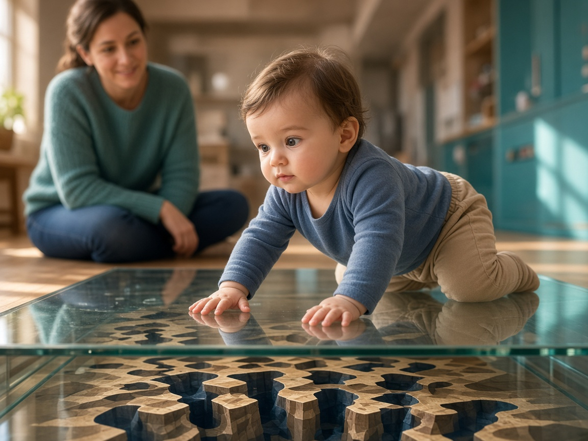
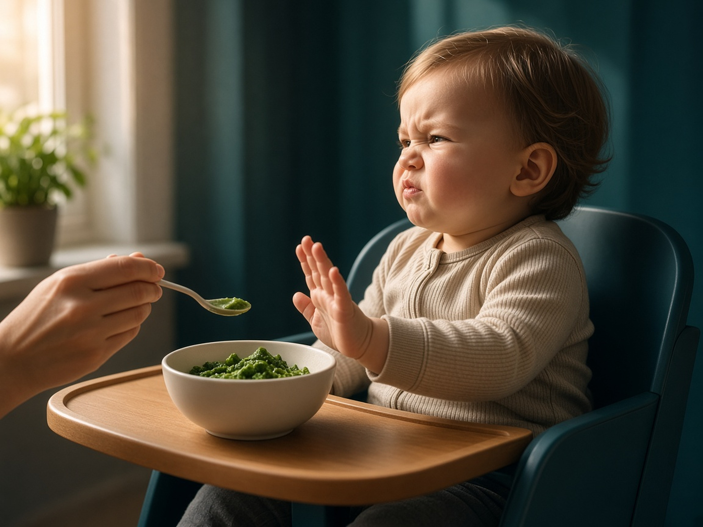
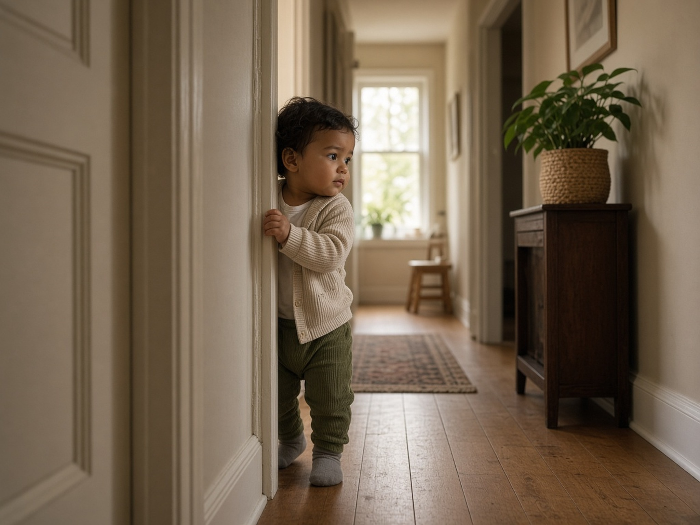
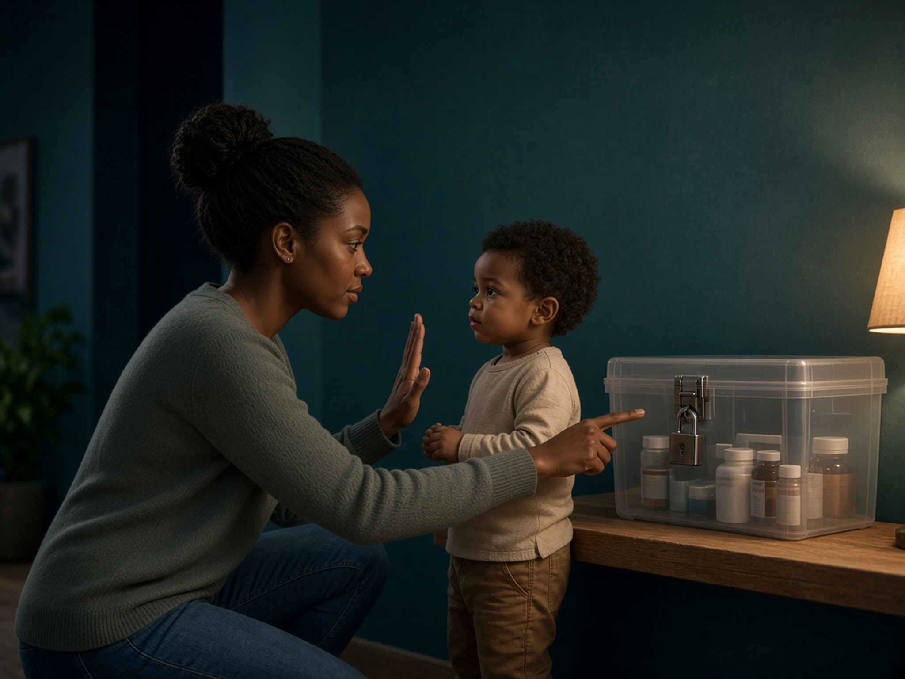
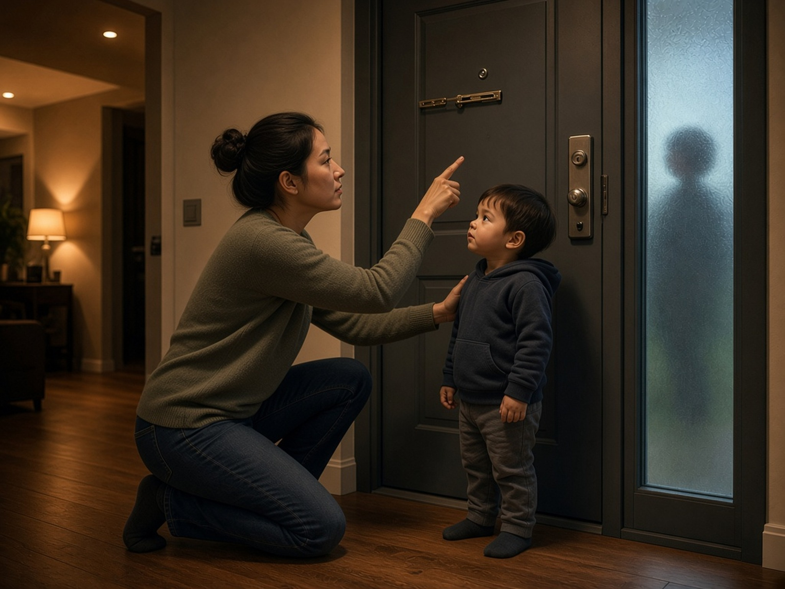
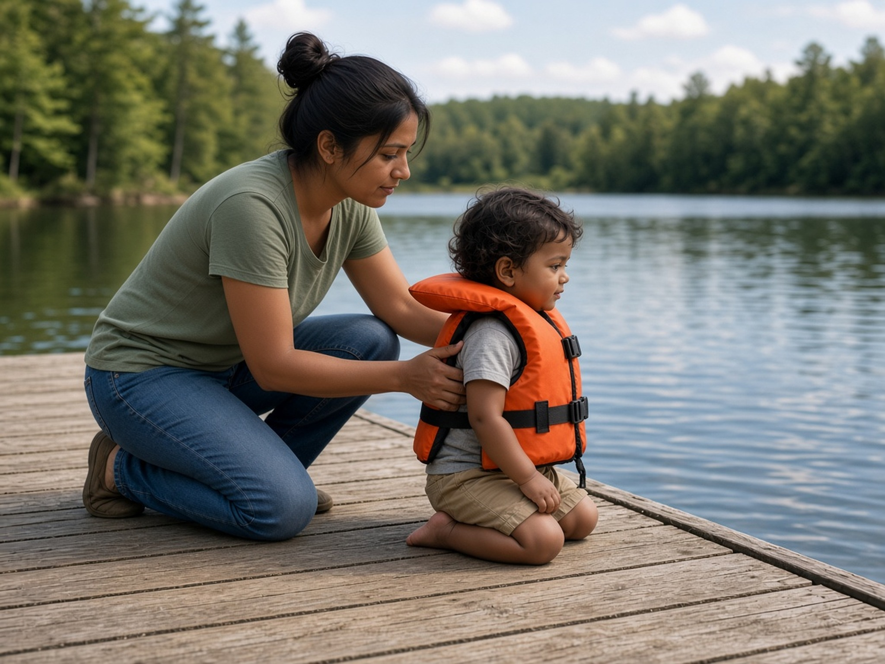

Top row — the infant pauses first
Depth, taste, and a pause before entering can all trigger a protective check.



Bottom row — mother turns instinct into a rule
Simple rehearsals make the safe response easier to remember.


